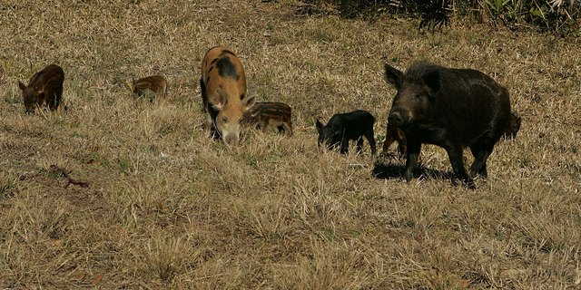

Is the forest across the creek still in balance?
Last year, wild hogs moved into the forest across the creek from the old oak. I made two data sheets, one for each patch, but they’re still blank. Scientists don’t guess. They count.

Plot A
| Kind of living thing | Count |
|---|---|
| ? | ? |
| ? | ? |
| ? | ? |
| Kinds in all: | ? |
Plot B
| Kind of living thing | Count |
|---|---|
| ? | ? |
| ? | ? |
| ? | ? |
| Kinds in all: | ? |
Build two plots in the forest
Build a healthy plot and an out-of-balance plot, so Dr. Reyes’s team can compare them.
Tap the box next to each step when you finish it.
- 🖥️Before you put on your headset
- Step 1 · Know what to bringYou’ll build two plots (patches of forest). Type the gray words in the Filter models box. This list is also in VR: open your menu, click Assignments, then click our assignment.🌿 Plot A · healthyAt least 5 different kinds, 1 or 2 of eachDeer, Rat, Grasshopper, Bee, Barn Owl, Ladybug, Mole, Fern, Flower Set🐗 Plot B · out of balanceAt least 5 wild hogs and only 1 other kindtype: Wild Boar (a wild hog), plus one Grasshopper🍄 Bonus · Plot AA decomposer by the rootstype: Fungal Cell or Bacteria🦋 The real plants and butterflies in the forest count too!
- 🥽In VR
- Step 2 · Go inPut on your headset and open the On-Demand app. Click the Explore tab and find Tranquil Forest. (Typing it in the Filter environments box finds it fast.) Click it, then click Begin Solo.
- Step 3 · Build Plot A (healthy)Pick a big tree. Press the top button on your right controller to open your menu, then click the Models tab. Around that tree, place at least 5 different kinds of living things, 1 or 2 of each.✋ To move a model: grab it with the palm trigger (the button under your middle finger). Turn and move it with the thumbstick. Grab it with both palm triggers to make it bigger or smaller.
- Step 4 · Build Plot B (out of balance)Teleport to a different tree, far away from Plot A. Around it, place at least 5 Wild Boar and only 1 other kind of living thing, like one Grasshopper. The hogs have taken over!
- Step 5 · BonusVR onlyGo back to Plot A and put a decomposer (a Fungal Cell or Bacteria) on the ground by the roots. Decomposers are part of a healthy forest too. Skip this step if you run out of time.
- Step 6 · Save (capture)Open your menu and click the Captures tab, then click Capture. Type a title, like your first name. For Class, pick our class (not No class (personal)). For Assignment, pick 10.02 VR · Two Plots. Click Save, then look for Submitted at the bottom of the menu.🔁 Want to fix something? Move the models and save again. Your new capture takes the place of the old one.
- ✅After
- Step 7 · Tell me you’re doneClick Leave in the top right corner of your menu and take off your headset. In the Canvas assignment box, type VR option submitted and turn it in.
🛟Having trouble in VR?Steps with pictures, and a how-to video
How-to video: Completing Assignments in Optima On-Demand (2 minutes)
These pictures come from a space map. Your map will be Tranquil Forest, but the buttons are the same.
 1Explore tab
1Explore tabOn your dashboard, click the Explore tab. Scroll with the bar on the right, or type the map’s name in Filter environments.
 2Begin Solo
2Begin SoloClick the map, then click Begin Solo. Only a solo room (just you) can save your work.
 3Open your menu
3Open your menuPress the top button on your right controller. The menu tabs are Environments, Models, Assignments and Captures.
 4Read the assignment
4Read the assignmentClick Assignments, then click our assignment. What to build shows on the right.
 5Bring out the models
5Bring out the modelsClick Models. Type in the Filter models box to find the parts. Click a part to bring it out.
 6Move and resize
6Move and resizeGrab a part with the palm trigger. Turn and move it with the thumbstick. Use both palm triggers to make it bigger or smaller.
 7Capture
7CaptureWhen it looks right, open your menu, click Captures, then click Capture.
 8Pick the class and assignment
8Pick the class and assignmentType a title. For Class, pick our class, not No class (personal). For Assignment, pick ours. Click Save.
 9Check, then leave
9Check, then leaveLook for Submitted at the bottom of the menu. Then click Leave in the top right corner.
- Your capture has two plots around two different trees, far apart.
- Plot A has at least 5 different kinds of living things.
- Plot B has at least 5 wild hogs and only 1 other kind.
Balance Scale badge earned!
Only VR field assistants earn this one. Dr. Reyes will walk through both of your plots to compare them.
Count both plots
- Each plot is a patch of forest cut into 12 squares. Tap every square, one at a time.
- Each living thing you tap goes on that plot’s data sheet. Bare dirt is not a living thing!
- Then decide which plot is in balance, and write a paragraph.
Which plot is in balance?
Count every square in both plots first.
Write a paragraph (4 or 5 sentences)
Which plot is in balance? Use numbers from your data sheets as evidence. Then tell one thing people could do to help the other plot.
- Plot ___ is in balance because it has ___ kinds of living things.
- Plot ___ is out of balance because ___.
- People could help by ___.
- Every square in both plots is counted, and you picked a plot.
- Your paragraph is at least 40 words and all 4 checks are lit.
How to turn it in: click the green button, choose Save as PDF, then upload that file to the Canvas assignment.